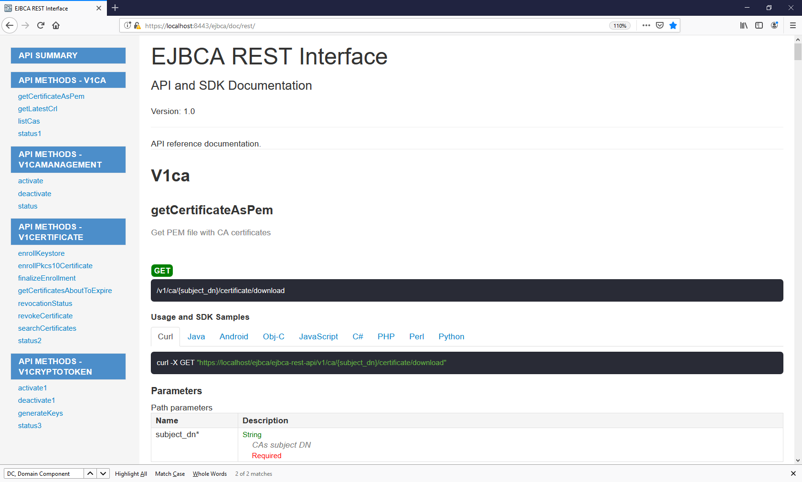
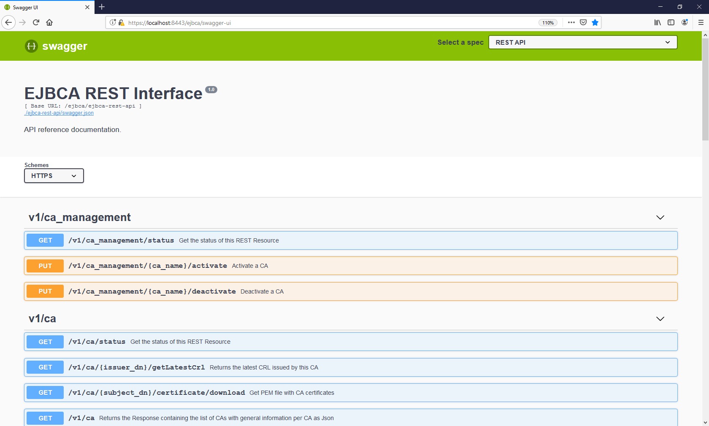
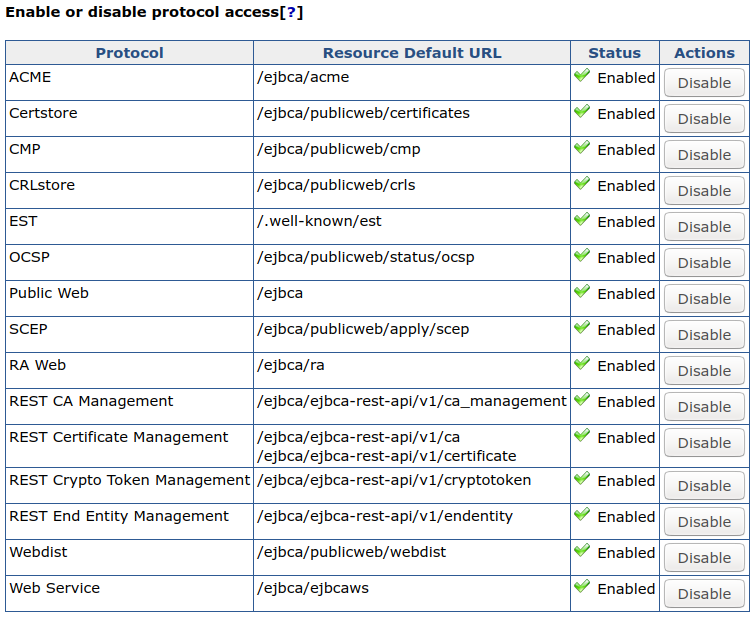

EJBCA REST Interface
ENTERPRISE This is an EJBCA Enterprise feature.
The following covers information on the EJBCA REST Interface for Certificate Management and CA Administration operations.
API Overview
EJBCA Certificate Management REST API contains endpoints intended for integration with EJBCA, using CA Management, Crypto token management, and Certificate management RESTful Web Services. This allows for easy integration and lightweight HTTP interaction for the most crucial parts of EJBCA.
The scope of the API is limited compared to the full set of features provided by EJBCA and provides functionality such as certificate requests, enrollment, revocation and more. For a full description of the functionality provided, see Resources.
REST API Reference
Each EJBCA release is bundled with an auto-generated REST API reference available on the URL https://localhost:8442/ejbca/doc/rest/ if deployed.

Swagger UI
Swagger UI allows you to visualize and interact with the API’s resources. The Swagger UI playground is available in your browser on the URL https://localhost:8443/
ejbca/swagger-ui
(use port 8443 since the REST API uses client certificate authentication).

The Swagger UI is only available if you build EJBCA in non-production mode, i.e. with ejbca.productionmode=false set in conf/ejbca.properties, and if REST is activated as a protocol (see below).
Getting Started
The EJBCA Certificate Management REST API is disabled by default. To enable the service, go to Administrator Web > System Configuration > Protocol Configuration and select Enable for the REST end point you want to use.

Integrating with the REST API and consuming the response can be done with any tool of choice. For basic GET requests, any web browser is sufficient and for improved integration, a REST library or similar tool is recommended.
The following shows an example of a basic request:
GET https://localhost:8443/ejbca/ejbca-rest-api/v1/certificate/statusResulting in the following JSON response. Note that version and revision may vary.
{ "status":"OK", "version":"1.0", "revision":"ALPHA"}You can access the URL above using for example cURL, your browser, or any other tool. Note that the REST API requires client certificate authentication, see Authentication.
Integrating with the REST API
Requests to the API are submitted using RESTful URLs with the standard HTTP methods: GET, POST, PUT. Additionally, some endpoints accept a JSON request body. Put together, each request consists of the HTTP method, endpoint URL, and (for some endpoints) a request body. Some endpoints require you to include an HTTP method header:
Content-Type: application/jsonGenerally, responses consist of an HTTP header including an RFC 2616 status code, and an application/json response body. For information on exceptions, see Responses.
In case of an error, the response body contains an appropriate error message describing the event.
Resources
The certificate management REST API provides four base resource URLs:
/ejbca/ejbca-rest-api/v1/ca_management//ejbca/ejbca-rest-api/v1/ca//ejbca/ejbca-rest-api/v1/certificate//ejbca/ejbca-rest-api/v1/cryptotoken//ejbca/ejbca-rest-api/v1/endentity/Each resource provides endpoints of interaction.
Endpoints under the /ca_management/ resource allow manipulating CAs, for example activating and deactivating a CA.
The /ca/ resource allows retrieving CA certificates, CRLs, and so on.
The /certificate/ resource handles certificate enrollment, revocation and other workflows related to managing certificates.
The /cryptotoken/ resource handles crypto token activation, deactivation, and crypto token key generation.
The /endentity/ resource handles adding, editing and deleting end entities.
For a full set of all endpoints, required input, responses, and other endpoint descriptions, see REST API Reference or try it out in the Swagger UI.
Requests
Each endpoint URL is built in the same way by the following structure:
https://[DOMAIN_NAME]:[PORT]/ejbca/ejbca-rest-api/[API_VERSION]/[RESOURCE]/[IDENTIFIER]/[OPERATION]?[QUERY_PARAM]Explanation
DOMAIN_NAME: Domain name of the EJBCA instance, for example: localhost.
PORT: Secure port of the EJBCA instance, for example: 8443.
API_VERSION: Version of the REST API, for example: v1.
RESOURCE: One of the two base resources /ca/ or /certificate/.
IDENTIFIER: Identifier of the entity to perform the operation on. This might be a Subject DN, serial number or both combined. A composite identifier could look like .../{issuer_dn}/{certificate_serial_number_hex}/revocationstatus.
OPERATION: The operation to perform, for example: /revocationstatus.
QUERY_PARAM: HTTP query parameters. Some endpoints accept query parameters rather than a JSON body. For example .../revoke?reason=KEY_COMPROMISE.
Note that not all endpoints require the identifier or query parameters. For example, the following is not specific for an entity and does not accept an identifier:
GET https://localhost:8443/ejbca/ejbca-rest-api/v1/ca/statusMethods
Each request requires a specified HTTP method. The expected method for each endpoint can be seen in REST API Reference or in the Swagger UI.
In general, the method used corresponds to the expected state change performed.
|
Method |
Description |
Example |
|
GET |
Used only to read data and not change it. |
.../{issuer_dn}/{certificate_serial_number_hex}/revocationstatus |
|
PUT |
Used in operations that updates some entity state. |
.../{issuer_dn}/{certificate_serial_number_hex}/revoke |
|
POST |
Used in operations which creates some entity. |
.../enrollkeystore |
|
DELETE |
Used in operations which deletes some entity |
.../endentity{endentity_name} |
Request Body
As mentioned, some endpoints accept a request body containing the desired input data. Request bodies must only contain JSON formatted data and the header Content-Type: application/json must be set in the request for the request to be accepted. All input fields (not values) must be snake_case formatted, e.g. "key_alg" rather than "keyAlg" or "key alg".
The following example shows a request to enroll a keystore (using cURL):
curl -X POST -H 'Content-Type: application/json' -i 'https://localhost:8443/ejbca/ejbca-rest-api/v1/certificate/enrollkeystore' --data '{"username":"testUser","password":"foo123","key_alg":"RSA","key_spec":"2048"}'Responses
While integrating with the REST API, the most relevant information in the response is the status-line (HTTP status code), Content-Type header, and the response body.
Status Codes
Any response code within the range of 2xx - 3xx may be considered successful. This means that the server has accepted the request and sent an appropriate response. The typical response code from a GET request would be 200 - OK. When the operation requires an approval by another administrator, the response will be 201 - Accepted, meaning that the request has been accepted successfully and is awaiting approval.
Response codes in the range 4xx - 5xx should be considered errors. It may be an authentication failure, conflict or a general server error. For example, requesting an operation not allowed using your specific client certificate will generate 403 - Unauthorized, most likely followed by some response message in the response body.
For a complete list of codes which may occur while interacting with the API, see Status Codes.
Response Body
The content type of the response can be determined by the Content-Type header and most endpoints will always return application/json. Exceptions include for example calling .../ca/{issuer_dn}/certificate/download which returns a byte streamed .pem certificate. In this case, the wildcard header */* is used. All requests regardless of response code, which reach the server will retrieve a response body. Any response to a successful request will contain a body including the requested information, for example:
curl -X GET -i 'https://localhost:8443/ejbca/ejbca-rest-api/v1/certificate/CN%3DManagementCA%2CO%3DEJBCA%20Sample%2CC%3DSE/4b0b0ceb7a8e5f1f/revocationstatus'Returns the following JSON body (given that the certificate is found):
{ "issuer_dn": "CN=ManagementCA,O=EJBCA Sample,C=SE", "serial_number": "4b0b0ceb7a8e5f1f", "revocation_reason": "KEY_COMPROMISE", "revocation_date": "2018-06-27T08:07:52Z", "revoked": true}In the event of an error, a response body containing the status code (in addition to the header), and an appropriate error message is returned.
For example, if the request above was done for a CA which does not exist, the client could expect a response like:
{ "error_code": 404, "error_message": "CA 'CN=NonExistingCA,O=EJBCA Sample,C=SE' does not exist."}If a completely unexpected error occurs, the server will respond with 500 - General failure. If this occurs, verify the content of the request and next require that the CA Administrator checks the server log.
Authentication
The REST API requires client certificate authentication from administrators just as the Admin GUI does. If you have a working Admin GUI client certificate, you should also be able to use it for the REST API. How the certificate is passed with the request depends on your integration environment. To verify server response and authentication, attempt accessing the API through any web browser using your client certificate:
https://[DOMAIN_NAME]:[PORT]/ejbca/ejbca-rest-api/v1/ca/versionYou can also use cURL or a similar tool by specifying --cert and --key.
If no certificate or an invalid certificate is provided, you'll most likely be presented with a "Bad certificate" error. However, if an attempt is made to request a resource above the privileges of a valid certificate, the response will contain a JSON formatted response body with the status code 403 - Unauthorized followed by an appropriate response message. For more information, see Status Codes.
Debugging REST API
By default, EJBCA logs basic information about incoming requests and INFO level.
The following info is logged in INFO logging level:
remote address
"X-Forwarded-For" header value
Example:
13:31:07,976 INFO [org.ejbca.ui.web.rest.api.config.RestLoggingFilter] (default task-10) GET https://localhost:8443/ejbca/ejbca-rest-api/v1/ca/CN=Management%20CA,O=PK,C=SE/certificate/download received from 127.0.0.1 X-Forwarded-For: nullIt is also possible to make EJBCA log the complete requests and responses at TRACE level.
The following info is logged in TRACE level:
request and response
time taken per request, i.e. endtime - starttime
As enabling TRACE logging globally, for all of EJBCA, may result in excessive logging, it is possible to enable it for the RestLoggingFilter only. On JBoss/WildFly this is done with simple commands in the jboss-cli:
/subsystem=logging/logger=org.ejbca.ui.web.rest.api.config:add/subsystem=logging/logger=org.ejbca.ui.web.rest.api.config:write-attribute(name=level, value=TRACE) Example TRACE logging for a simple request is:
curl -X GET "https://localhost:8443/ejbca/ejbca-rest-api/v1/ca/CN=Management%20CA,O=PK,C=SE/certificate/download" --insecure --cert cert-superadmin.pem --key key-superadmin.pem2018-08-07 13:31:08,038 TRACE [org.ejbca.ui.web.rest.api.config.RestLoggingFilter] (default task-10) GET https://localhost:8443/ejbca/ejbca-rest-api/v1/ca/CN=Management%20CA,O=PK,C=SE/certificate/download received from 127.0.0.1 X-Forwarded-For: nullRequest headers: Accept: */* User-Agent: curl/7.47.0 Host: localhost:8443Request data: Response data:Subject: CN=Management CA,O=PK,C=SEIssuer: CN=Management CA,O=PK,C=SE-----BEGIN CERTIFICATE-----MIIDTzCCAjegAwIBAgIIbbifeqpPKLcwDQYJKoZIhvcNAQELBQAwNTEWMBQGA1UE<snip>xdd9ycYOyym2nvM+SPydHlK8dAqwwXzICFFOCRADsQNakVU=-----END CERTIFICATE-----Time taken: 62msStatus Codes
API status codes are exposed in standard HTTP response codes and JSON formatted messages. For example, the following example shows an HTTP 403 error:
{ "error_code": 403, "error_message": "Not authorized to resource /administrator."}The response code will also be available in the HTTP response status-line. The following table describes status codes which may be "expected" responses from the REST API and a few possible reasons.
|
HTTP Status Code |
General Description |
EJBCA REST API Context |
|
200 |
OK |
Successful HTTP request, expect a proper response body. Typically received from a successful GET request. |
|
201 |
Created |
Successful HTTP request. Some entity has been created, e.g. certificate enrolled. Typically received after a successful POST request. |
|
202 |
Accepted |
Request accepted by the server but awaiting processing. Most likely waiting for administrator approval. |
|
400 |
Bad Request |
Most likely missing or invalid input parameters / JSON body in the request. |
|
403 |
Forbidden |
Request accepted but the operation is refused due to insufficient privileges, disabled features etc. |
|
404 |
Not Found |
Requested entity was not found by EJBCA. Could occur if the input refers to a non-existing entity, such as a user or a CA. |
|
409 |
Conflict |
Conflict occurred while processing request, e.g. trying to revoke an already revoked certificate. |
|
413 |
Payload Too Large |
The request is larger than the server is willing to process. Should not occur while using the API as intended. |
|
422 |
Unprocessable Entity |
Well-formed request but unable to process due to e.g. semantic errors. Could occur in case of invalid key algorithm, validity etc. |
|
500 |
Internal Server Error |
Unexpected error while calling the API. For additional details, refer to the server log (CA Administrator). |
|
503 |
Service Unavailable |
Possible reason could be that the CA is offline, CT log is unavailable etc. |
Examples
Generate a CSR and Request a Certificate using Bash
You can use OpenSSL, jq, and cURL ( version >7.57) to create a key and a CSR, create a JSON payload containing the CSR, and then enroll for a TLS server certificate using the configuration file and script below.
Configuration File Example
[req]distinguished_name = req_distinguished_namereq_extensions = v3_reqprompt = no[req_distinguished_name]C = SEO = PrimeKey Solutions ABOU = InfraCN = primekey.com[v3_req]keyUsage = keyEncipherment, digitalSignatureextendedKeyUsage = serverAuthsubjectAltName = @alt_names[alt_names]DNS.1 = primekey.comScript Example
The pkcs10enroll.sh script generates a new CSR if one does not already exist, requests a certificate from EJBCA, and then prints the JSON response to stdout.
#!/bin/sh# Before running this script you need to do the following:# 1. If you are contacting the CA directly:## Enable the REST API in System Configuration -> Protocol Configuration.## If you are contacting an external RA, you should enable the REST API for# the peer role on the CA.hostname="172.16.31.14"# 2. Specify profiles, CA and end entity to use for issuance## Enable 'Allow Subject DN Override by CSR' in the certificate profilecert_profile_name="staging-cert"ee_profile_name="staging-ee"ca_name="Issuing CA"# This user will be created if it does not exist. The status of an existing# end entity will be set to NEW automatically.username="pkcs10enroll_user"# If the user already exists, specify the enrollment code hereenrollment_code="foo123"# 3. Adjust the variable $client_cert to point to a client certificate.client_cert="/opt/jboss/p12/SuperAdmin.p12:foo123"if [ ! -f 'server.csr' ]; then openssl req -new -out server.csr -newkey rsa:2048 \ -nodes -sha256 -keyout server.key \ -config csr.conf > /dev/null 2>&1ficsr=$(cat server.csr)template='{"certificate_request":$csr, "certificate_profile_name":$cp, "end_entity_profile_name":$eep, "certificate_authority_name":$ca, "username":$ee, "password":$pwd}'json_payload=$(jq -n \ --arg csr "$csr" \ --arg cp "$cert_profile_name" \ --arg eep "$ee_profile_name" \ --arg ca "$ca_name" \ --arg ee "$username" \ --arg pwd "$enrollment_code" \ "$template")curl -X POST -s \ --cert-type P12 \ --cert "$client_cert" \ -H 'Content-Type: application/json' \ --data "$json_payload" \ "https://$hostname/ejbca/ejbca-rest-api/v1/certificate/pkcs10enroll" \ | jq .Revocation Workflow Example
Follow the example below to first check the revocation status of a certificate and then revoke the certificate.
In this example, the certificate's DN is CN=CA1 and serial number (in HEX) is 5CB3D42686039768D973E5694BF205377AF6.
To check the revocation status of the certificate, call the GET /v1/certificate/{issuer_dn}/{certificate_serial_number}/revocationstatus REST method:
curl -X GET -s \--cert-type P12 \--cert"/opt/jboss/p12/SuperAdmin.p12:foo123"\-H"accept: application/json""https://localhost:8443/ejbca/ejbca-rest-api/v1/certificate/CN%3DCA1/5CB3D42686039768D973E5694BF205377AF6/revocationstatus"From the response below, you can confirm that the certificate is active.
{"issuer_dn":"CN=CA1","serial_number":"5CB3D42686039768D973E5694BF205377AF6","revocation_reason":"NOT_REVOKED","revoked":false}To revoke the certificate, call the PUT /v1/certificate/{issuer_dn}/{certificate_serial_number}/revoke REST method:
curl -X PUT -s \--cert-type P12 \--cert"/opt/jboss/p12/SuperAdmin.p12:foo123"\-H"accept: application/json""https://localhost:8443/ejbca/ejbca-rest-api/v1/certificate/CN%3DCA1/5CB3D42686039768D973E5694BF205377AF6/revoke?reason=KEY_COMPROMISE"Confirm from the response that the certificate has been successfully revoked:
{"issuer_dn":"CN=HT_REMOVAL_CA","serial_number":"5CB3D42686039768D973E5694BF205377AF6","revocation_reason":"KEY_COMPROMISE","revocation_date":"2019-05-27T15:02:56Z","message":"Successfully revoked","revoked":true}
Request a PKCS12 Certificate Using Python
To request a PKCS12 certificate using python, do the following:
Install the module requests_pkcs12 using pip.
pip3installrequests_pkcs12Authenticate with the client certificate stored in superadmin.p12 and request a PKCS12 file for the end entity python.
importjsonfromrequests_pkcs12importpostresponse=post('https://myca:8443/ejbca/ejbca-rest-api/v1/certificate/enrollkeystore',json={'username':'python','password':'foo123','key_alg':'RSA','key_spec':'2048'},headers={'content-type':'application/json'},pkcs12_filename='/srv/superadmin.p12',pkcs12_password='foo123',verify='/srv/truststore.pem')print(json.dumps(json.loads(response.content), indent=4, sort_keys=True))
Search for Certificates
To search for certificates with multiple search criteria, use the search method.
Example Search Requests
Example JSON search request
The following shows an example JSON search request to search for ACTIVE certificates for the superadmin user, limiting the search to return a maximum of 10 certificates:
{ "max_number_of_results": 10, "criteria": [ { "property": "QUERY", "value": "superadmin", "operation": "EQUAL" }, { "property": "STATUS", "value": "CERT_ACTIVE", "operation": "EQUAL" } ]}To search for DN or altName fields, for example, looking for a maximum of 10 certificates issued to a user with Common Name like 'Firstname Lastname', use the following:
{ "max_number_of_results": 10, "criteria": [ { "property": "QUERY", "value": "Firstname Lastname", "operation": "LIKE" }, { "property": "STATUS", "value": "CERT_ACTIVE", "operation": "EQUAL" } ]}Example cURL search command
The following shows an example cURL command to search for ACTIVE certificates for the superadmin user, limiting the search to return a maximum of 10 certificates:
curl -X POST "https://localhost:8443/ejbca/ejbca-rest-api/v1/certificate/search" \-H "accept: application/json" -H "Content-Type: application/json" \-d "{ \"max_number_of_results\": 10, \"criteria\": [ { \"property\": \"QUERY\", \"value\": \"tomastest1.primekey.com\", \"operation\": \"EQUAL\" }, { \"property\": \"STATUS\", \"value\": \"CERT_ACTIVE\", \"operation\": \"EQUAL\" } ]}"Troubleshooting
An exception like the following may be caused by an encoding issue:
IOException while decoding certificate request from PEM: -----END CERTIFICATE REQUESTThe issue can be resolved by manually replacing the linebreaks with \n.